Lesson 4
Exploratory Data Analysis
Learning Objectives
After this lesson, students will be able to:
Choose an appropriate visualization for exploring and summarizing a tabular data set.
Use methods from the
ggplot2package to create an appropriate visualization for exploring and summarizing a tabular data set.Apply steps from exploratory data analysis to generate or refine questions about a data set.
Readings, etc.
For this lesson, refer to the following readings, etc.:
Chapters 2 and 11 from R for Data Science (Wickham, Çetinkaya-Rundel, and Grolemund 2023). View book online.
Chapter 4 from Data Science: A First Introduction (Timbers, Campbell, and Lee 2022). View book online.
Overview
An exploratory data analysis (EDA) is any initial investigation of a data set or data sets with the goal to simply see what is in the data and what questions one may ask from the data.
Important: Every statistical or machine learning analysis should start with an EDA.
Your goal during EDA is to develop an understanding of your data. Two major themes for EDA are:
To explore what type of variation occurs within variables.
To explore what type of covariation occurs between variables.
The two most important tools for EDA are
Numerical data summaries.
Visual data summaries.
In this lesson, we will first build our toolkit for EDA with a major focus on gaining tools and skills for data visualization. Then, we will work through some EDA case studies.
Introduction to Data Visualization
Most people process visual information quickly and easily. Few people can learn much at all by scrolling through a spreadsheet of raw data. Thus, it is important for a data scientist to develop excellent skills in data visualization. By data visualization, we mean the process of representing data via a visual format.
In this course, we will utilize the ggplot2 package (and maybe some packages that extend ggplot2) for data visualization (Wickham 2016). There are many excellent resources on data visualization. Two that are highly recommended and available for free online are Data Visualization a Practical Introduction and Fundamentals of Data Visualization (Healy 2018; Wilke 2019). View Data Visualization a Practical Introduction. View Fundamentals of Data Visualization. Not only are these two books free, they are also recent and utilize R and ggplot2.
Data visualizations come with a risk of confusing people. Further, visualizations might not work well for everyone. So, it is very important to choose visualizations that are as clear, accessible, and clean as possible. For example, you should:
Avoid the use of colors that are not easy to distinguish.
Use appropriate scales.
Use alt-text and figure captions.
There are other practices and techniques for making effective and accessible visualizations that we will discuss later.
The ggplot2 Package
The ggplot2 package implements the grammar of graphics, a coherent system for describing and building graphs. With ggplot2, you can do more and faster by learning one system and applying it in many places.
Figure 1 shows the typical structure of the grammar of graphics as implemented in the ggplot2 package1.
Let’s see what happens when we run the commands from Figure 1.
ggplot(ten_lang, aes(x = language, y = mother_tongue)) +
geom_bar(stat = "identity")
# the following code is equivalent
# ten_lang %>%
# ggplot(aes(x = language, y = mother_tongue)) +
# geom_bar(stat = "identity")Before we dive further into the details of using ggplot2 and see more examples, let’s think about what kinds of plots or graphs we might want to make.
Types of Plots
There are many different types of plots one can make so there isn’t necessarily a unique choice to be made when deciding how to visualize data. However, there are a few considerations that will have a strong influence on what type of plot(s) you might create to visualize some data.
Among the most important considerations is, the type of variable(s) involved in the parts of your data that you want to display visually. Table 1 lists the most common variable types.
| Type of variable | Examples | Appropriate scale | Description |
|---|---|---|---|
| quantitative/numerical continuous | 1.3, 5.7, 83, 1.5x10-2 | continuous | Arbitrary numerical values. These can be integers, rational numbers, or real numbers. |
| quantitative/numerical discrete | 1, 2, 3, 4 | discrete | Numbers in discrete units. These are most commonly but not necessarily integers. For example, the numbers 0.5, 1.0, 1.5 could also be treated as discrete if intermediate values cannot exist in the given dataset. |
| qualitative/categorical unordered | dog, cat, fish | discrete | Categories without order. These are discrete and unique categories that have no inherent order. These variables are also called factors. |
| qualitative/categorical ordered | good, fair, poor | discrete | Categories with order. These are discrete and unique categories with an order. For example, “fair” always lies between “good” and “poor”. These variables are also called ordered factors. |
| date or time | Jan. 5 2018, 8:03am | continuous or discrete | Specific days and/or times. Also generic dates, such as July 4 or Dec. 25 (without year). |
| text | The quick brown fox jumps over the lazy dog. | none, or discrete | Free-form text. Can be treated as categorical if needed. |
The reason why data types such as those listed in Table 1 influence the type of plot(s) used to display data is because the data type of a variable determines what kind of aesthetics can be used in a plot.
By an aesthetic, we mean a visual element that can be used to describe aspects of a given graphic. Figure 3 shows some common aesthetics for plots or graphs used in data visualization.
Returning to Figure 1, we notice that one of the arguments that must be given to ggplot is aes which is short for aesthetic.
Figure 4 shows several of the most common types of plots for a single or pair of variables. These plot types are:
- scatter plots visualize the relationship between two quantitative variables,
- line plots visualize trends with respect to an independent, ordered quantity (e.g., time),
- bar plots visualize comparisons of amounts, and
- histograms visualize the distribution of one quantitative variable (i.e., all its possible values and how often they occur)
Tips for Good Visualizations
We will soon learn how to make these types of plots and more with ggplot2. Before that, here is a list of tips for making sure that our visualizations are good:
- Make sure the visualization answers the question you have asked most simply and plainly as possible.
- Use legends and labels so that your visualization is understandable without reading the surrounding text.
- Ensure the text, symbols, lines, etc., on your visualization are big enough to be easily read.
- Ensure the data are clearly visible; don’t hide the shape/distribution of the data behind other objects (e.g., a bar).
- Make sure to use color schemes that are easily visible by those with colorblindness (a surprisingly large fraction of the overall population—from about 1% to 10%, depending on sex and ancestry (Deeb 2005)). For example, ColorBrewer and the
RColorBrewerR package (Neuwirth 2014) provide the ability to pick such color schemes, and you can check your visualizations after you have created them by uploading to online tools such as a color blindness simulator. - Redundancy can be helpful; sometimes conveying the same message in multiple ways reinforces it for the audience.
- Use colors sparingly. Too many different colors can be distracting, create false patterns, and detract from the message.
- Be wary of overplotting. Overplotting is when marks that represent the data overlap, and is problematic as it prevents you from seeing how many data points are represented in areas of the visualization where this occurs. If your plot has too many dots or lines and starts to look like a mess, you need to do something different.
- Only make the plot area (where the dots, lines, bars are) as big as needed. Simple plots can be made small.
- Don’t adjust the axes to zoom in on small differences. If the difference is small, show that it’s small!
If you’re not sure what plot to make for your data, the data-to-viz website can be very helpful. View the data-to-viz site. Once you know what type of plot to make, the R Graph Gallery website is helpful for finding the code to make the plot with ggplot2. View the R Graph Gallery
Using the ggplot2 Package
In this section, we will go through many use cases for ggplot2. For the examples and exercises in this section, we will work with three data sets:
The
mpgdata set in theggplot2package. The first few rows formpgare shown in Table 2.The
diamondsdata set in theggplot2package. The first few rows fordiamondsare shown in Table 3.The tornados data set from the Tidy Tuesday data repository. The first few rows for this data are shown in Table 4.
To access the mpg and diamonds data sets, we just need to load the ggplot2 package. To access the tornados data, we need to load the .csv file which we do with the following code:
tornados <- readr::read_csv('https://raw.githubusercontent.com/rfordatascience/tidytuesday/master/data/2023/2023-05-16/tornados.csv')Let’s look at the first few rows for each of the three data sets:
mpg
| manufacturer | model | displ | year | cyl | trans | drv | cty | hwy | fl | class |
|---|---|---|---|---|---|---|---|---|---|---|
| audi | a4 | 1.8 | 1999 | 4 | auto(l5) | f | 18 | 29 | p | compact |
| audi | a4 | 1.8 | 1999 | 4 | manual(m5) | f | 21 | 29 | p | compact |
| audi | a4 | 2.0 | 2008 | 4 | manual(m6) | f | 20 | 31 | p | compact |
| audi | a4 | 2.0 | 2008 | 4 | auto(av) | f | 21 | 30 | p | compact |
| audi | a4 | 2.8 | 1999 | 6 | auto(l5) | f | 16 | 26 | p | compact |
| audi | a4 | 2.8 | 1999 | 6 | manual(m5) | f | 18 | 26 | p | compact |
diamonds
| carat | cut | color | clarity | depth | table | price | x | y | z |
|---|---|---|---|---|---|---|---|---|---|
| 0.23 | Ideal | E | SI2 | 61.5 | 55 | 326 | 3.95 | 3.98 | 2.43 |
| 0.21 | Premium | E | SI1 | 59.8 | 61 | 326 | 3.89 | 3.84 | 2.31 |
| 0.23 | Good | E | VS1 | 56.9 | 65 | 327 | 4.05 | 4.07 | 2.31 |
| 0.29 | Premium | I | VS2 | 62.4 | 58 | 334 | 4.20 | 4.23 | 2.63 |
| 0.31 | Good | J | SI2 | 63.3 | 58 | 335 | 4.34 | 4.35 | 2.75 |
| 0.24 | Very Good | J | VVS2 | 62.8 | 57 | 336 | 3.94 | 3.96 | 2.48 |
tornados
| om | yr | mo | dy | date | time | tz | datetime_utc | st | stf | mag | inj | fat | loss | slat | slon | elat | elon | len | wid | ns | sn | f1 | f2 | f3 | f4 | fc |
|---|---|---|---|---|---|---|---|---|---|---|---|---|---|---|---|---|---|---|---|---|---|---|---|---|---|---|
| 192 | 1950 | 10 | 1 | 1950-10-01 | 21:00:00 | America/Chicago | 1950-10-02 03:00:00 | OK | 40 | 1 | 0 | 0 | 5e+04 | 36.73 | -102.52 | 36.88 | -102.30 | 15.8 | 10 | 1 | 1 | 25 | 0 | 0 | 0 | FALSE |
| 193 | 1950 | 10 | 9 | 1950-10-09 | 02:15:00 | America/Chicago | 1950-10-09 08:15:00 | NC | 37 | 3 | 3 | 0 | 5e+05 | 34.17 | -78.60 | 0.00 | 0.00 | 2.0 | 880 | 1 | 1 | 47 | 0 | 0 | 0 | FALSE |
| 195 | 1950 | 11 | 20 | 1950-11-20 | 02:20:00 | America/Chicago | 1950-11-20 08:20:00 | KY | 21 | 2 | 0 | 0 | 5e+05 | 37.37 | -87.20 | 0.00 | 0.00 | 0.1 | 10 | 1 | 1 | 177 | 0 | 0 | 0 | FALSE |
| 196 | 1950 | 11 | 20 | 1950-11-20 | 04:00:00 | America/Chicago | 1950-11-20 10:00:00 | KY | 21 | 1 | 0 | 0 | 5e+05 | 38.20 | -84.50 | 0.00 | 0.00 | 0.1 | 10 | 1 | 1 | 209 | 0 | 0 | 0 | FALSE |
| 197 | 1950 | 11 | 20 | 1950-11-20 | 07:30:00 | America/Chicago | 1950-11-20 13:30:00 | MS | 28 | 1 | 3 | 0 | 5e+04 | 32.42 | -89.13 | 0.00 | 0.00 | 2.0 | 37 | 1 | 1 | 101 | 0 | 0 | 0 | FALSE |
| 194 | 1950 | 11 | 4 | 1950-11-04 | 17:00:00 | America/Chicago | 1950-11-04 23:00:00 | PA | 42 | 3 | 1 | 0 | 5e+05 | 40.20 | -76.12 | 40.40 | -75.93 | 15.9 | 100 | 1 | 1 | 71 | 11 | 0 | 0 | FALSE |
Exercise: For each variables in each of the three data sets, determine the appropriate data type.
Basic ggplot2 Usage
Numerical Data
Histograms are a common way to visualize a single numerical variable. Here is how to make a basic histogram with ggplot22:
mpg %>%
ggplot(aes(x=hwy)) +
geom_histogram()`stat_bin()` using `bins = 30`. Pick better value with `binwidth`.Notice that we get a message about the number of “bins” for our histogram.
Question: What is meant by the number of bins for a histogram?
We can change either the number of bins or the width of bins for a histogram created with ggplot2. For example,
mpg %>%
ggplot(aes(x=hwy)) +
geom_histogram(bins=22)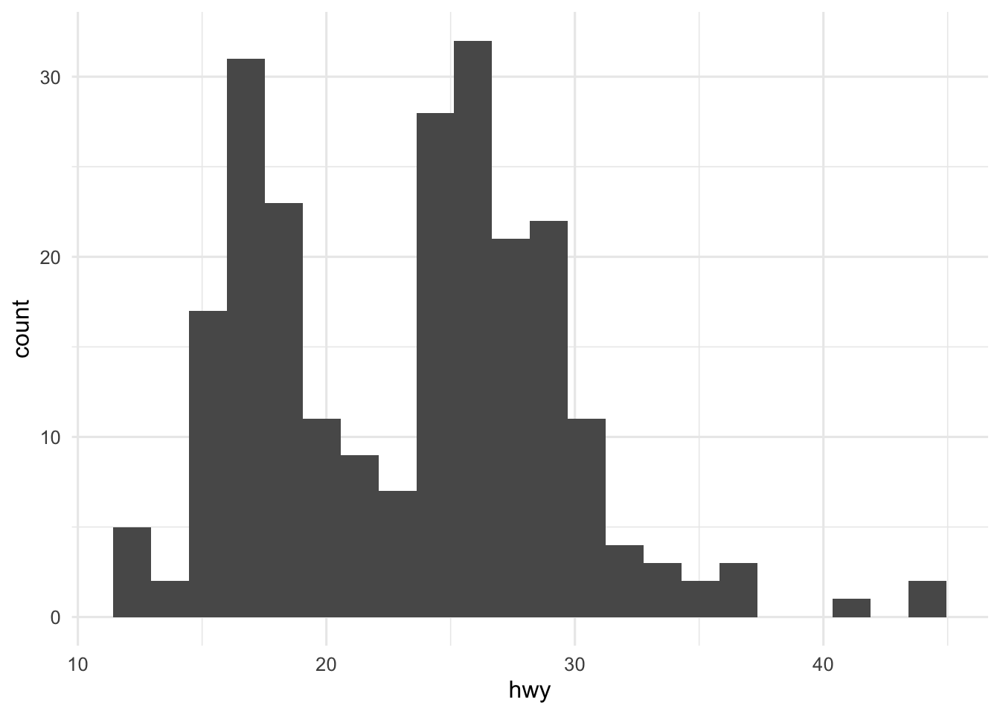
or
mpg %>%
ggplot(aes(x=hwy)) +
geom_histogram(binwidth = 5)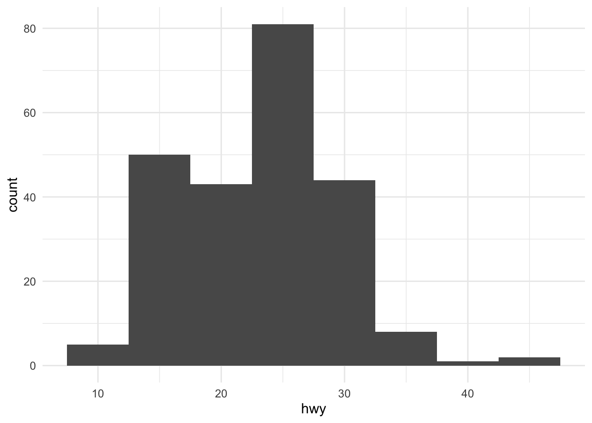
The aesthetic value fill determines the shading of a histogram (and also other graphical objects as we will see later).
mpg %>%
ggplot(aes(x=hwy)) +
geom_histogram(fill="black")`stat_bin()` using `bins = 30`. Pick better value with `binwidth`.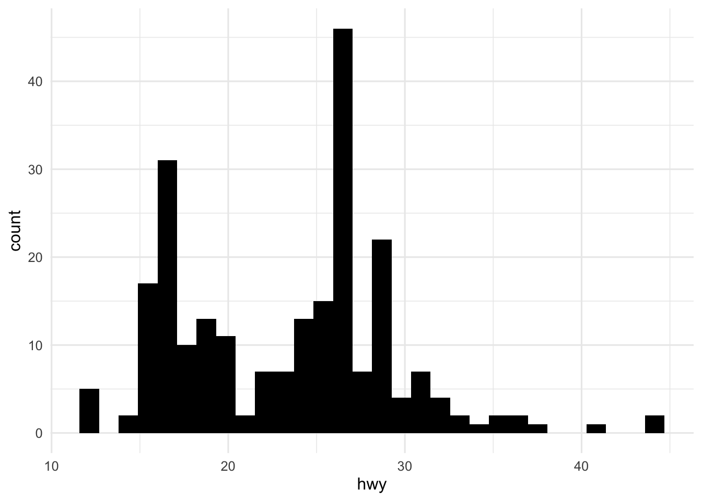
The aesthetic value color determines the boundary color of a histogram (and also other graphical objects as we will see later).
mpg %>%
ggplot(aes(x=hwy)) +
geom_histogram(color="white")`stat_bin()` using `bins = 30`. Pick better value with `binwidth`.Here is a nicer version of our histogram where we’ve included better labels for the axes:
mpg %>%
ggplot(aes(x=hwy)) +
geom_histogram(fill="purple",color="white",bins = 25) +
labs(x="Highway gas milage (mpg)",y="Count")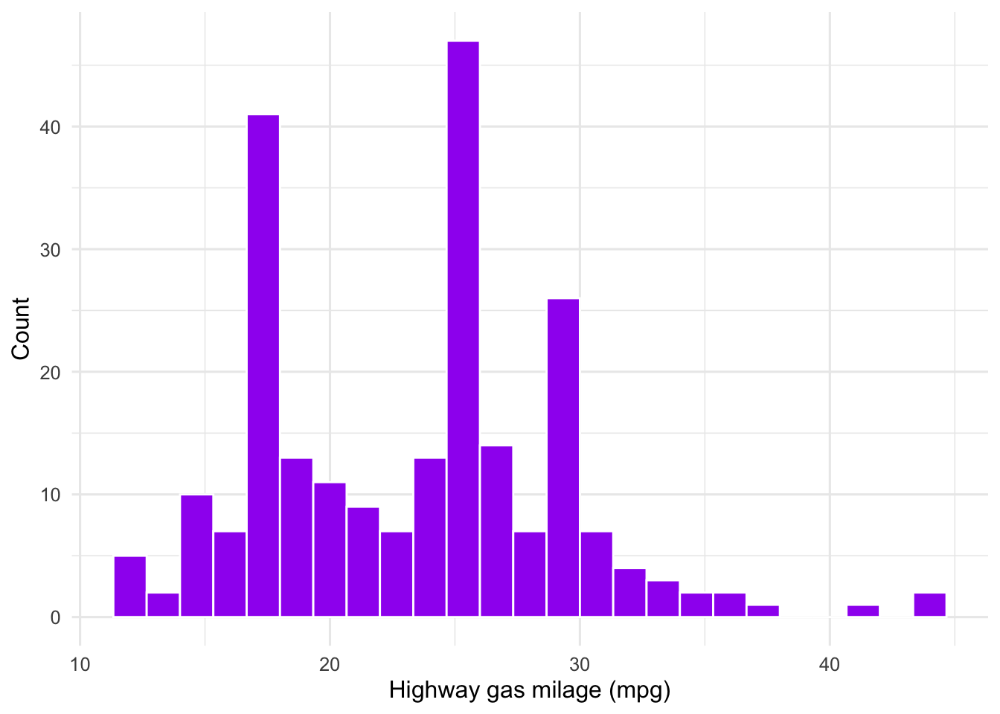
Exercise: Create a nice histogram for the carat variable in the diamonds data set.
Box plots are an alternative way to visualize numerical variables. Here is a basic box plot created using using ggplot2:
mpg %>%
ggplot(aes(y=hwy)) +
geom_boxplot()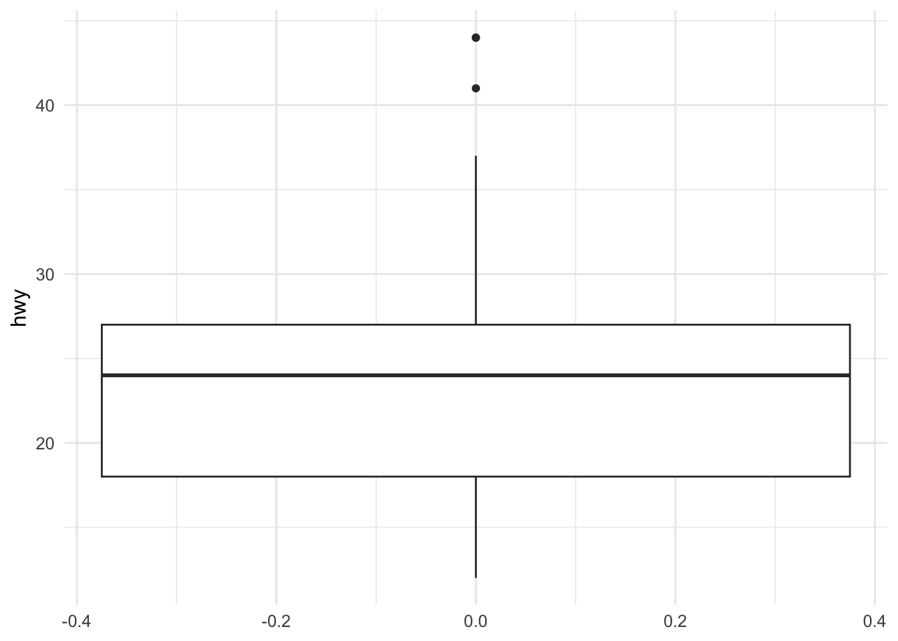
Here is an nicer version that also adds the data points over the box plot:
mpg %>%
ggplot(aes(y=hwy,x=rep(1,nrow(mpg)))) +
geom_boxplot(outlier.shape = NA,color="orange") +
geom_jitter(width = 0.2,alpha=0.5,color="darkgreen") +
labs(x="",y="Highway gas mileage (mpg)") +
theme(axis.text.x = element_blank())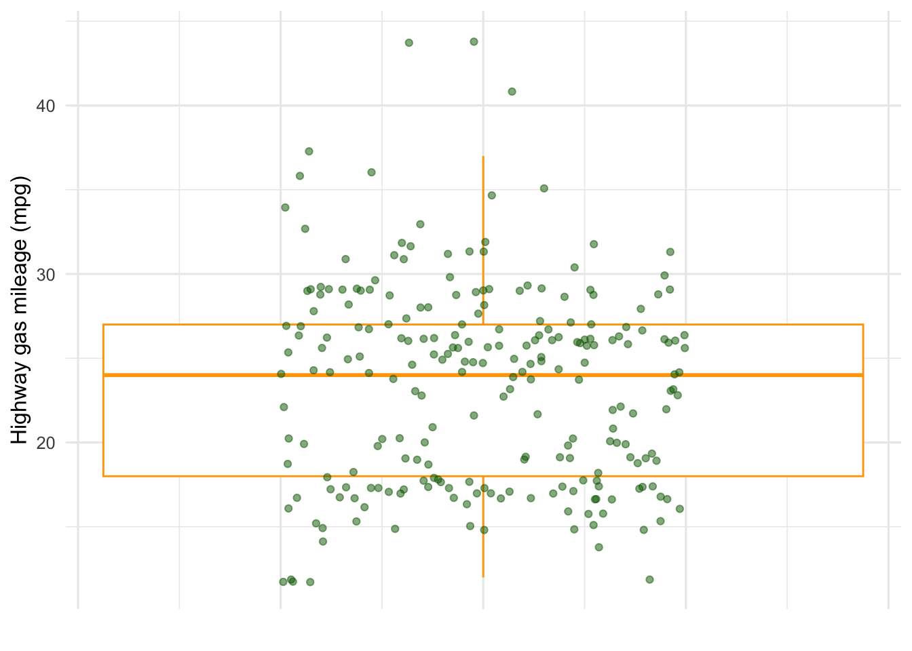
Exercise: Compare and contrast histograms and box plots.
Exercise: Create a nice box plot for the carat variable in the diamonds data set.
Density plots are yet another way to visualize numerical variables. They are basically smoothed versions of histograms but with the y-axis scaled so that the total area under the curve is 1.
mpg %>%
ggplot(aes(x=hwy)) +
geom_density()Exercise: What are the main aesthetics used in a density plot?
Since density plots involve lines or more precisely, curves we can adjust the line width. For example,
mpg %>%
ggplot(aes(x=hwy)) +
geom_density(linewidth=2)Adding a so-called rug lets us see where the observed values in our data fall:
mpg %>%
ggplot(aes(x=hwy)) +
geom_density(linewidth=2) +
geom_rug()By normalizing our data, we can plot a density curve over the data histogram. For example,
mpg %>%
ggplot(aes(x=hwy)) +
geom_histogram(aes(y = after_stat(density)),
fill="purple",color="white",bins = 25) +
geom_density(linewidth=2,color="gold") +
geom_rug()Exercise: Create a nice density plot for the carat variable in the diamonds data set.
Categorical Data
Perhaps the most common plot type for a single categorical variable is a bar plot. Here is how to create a basic bar plot using ggplot2:
diamonds %>%
ggplot(aes(cut)) +
geom_bar()Note that a bar plot is just a visual representation of a frequency table for the variable:
diamonds %>%
pull(cut) %>%
table().
Fair Good Very Good Premium Ideal
1610 4906 12082 13791 21551 Similar to what we saw with histograms, the color aesthetic changes the boundary of our bars in bar plots:
diamonds %>%
ggplot(aes(x=cut,color=cut)) +
geom_bar()while the fill aesthetic changes the shading of our bars:
diamonds %>%
ggplot(aes(x=cut,fill=cut)) +
geom_bar()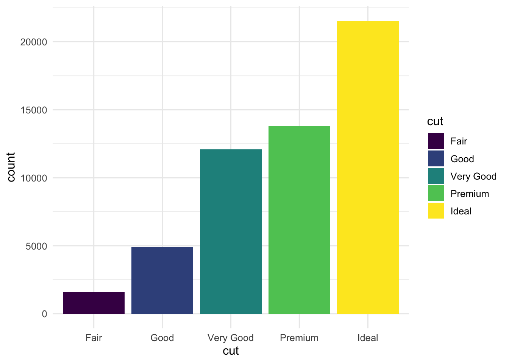
The next plot demonstrates how to modify the color palette for a categorical variable:
diamonds %>%
ggplot(aes(x=cut,fill=cut)) +
geom_bar(color="black") +
scale_fill_brewer(palette="Spectral") +
labs(x = "Cut of diamond",y="Count", fill="Cut of diamond") We can also manually change the ordering of our variables:
diamonds %>%
mutate(cut = factor(cut,levels=c("Fair","Good","Ideal","Premium","Very Good"))) %>%
ggplot(aes(x=cut,fill=cut)) +
geom_bar(color="black") +
scale_fill_brewer(palette="Spectral") +
labs(x = "Cut of diamond",y="Count", fill="Cut of diamond") 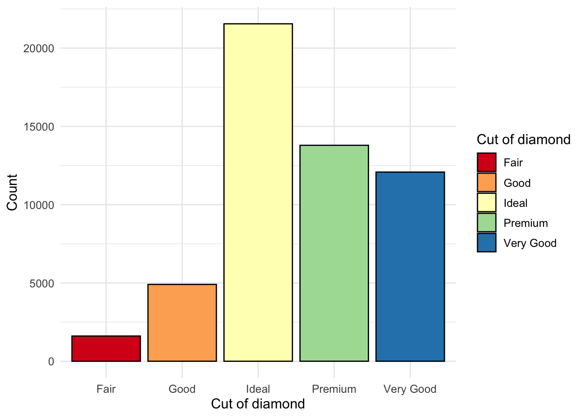
Exercise: Create a nice bar plot for the class variable in the mpg data set.
Note that the ggthemes package contains functions like scale_color_colorblind and scale_fill_colorblind that make it easy to use colorblind-friendly color palettes. For example,
diamonds %>%
ggplot(aes(x=cut,fill=cut)) +
geom_bar(color="black") +
scale_fill_colorblind() +
labs(x = "Cut of diamond",y="Count", fill="Cut of diamond")The scales package makes it easy to use certain common scales or units for the axes. For example, if we wanted scientific notation for the y-axis in the previous plot, we could do as follows:
diamonds %>%
ggplot(aes(x=cut,fill=cut)) +
geom_bar(color="black") +
scale_fill_colorblind() +
scale_y_continuous(labels = scales::label_scientific()) +
labs(x = "Cut of diamond",y="Count", fill="Cut of diamond")Visualizing Relationships
To visualize a relationship we need to have at least two variables mapped to aesthetics of a plot. We will start by looking at examples for visualizing the relationship between exactly two variables. The most common ways to do this include:
Scatter plots for visualizing the relationship between two numerical variables.
Side-by-side box plots for visualizing the relationship between a numerical variable and a categorical variable.
Stacked bar plots for visualizing the relationship between two categorical variables.
Here is an example of a scatter plot:
diamonds %>%
ggplot(aes(x=carat,y=price)) +
geom_point()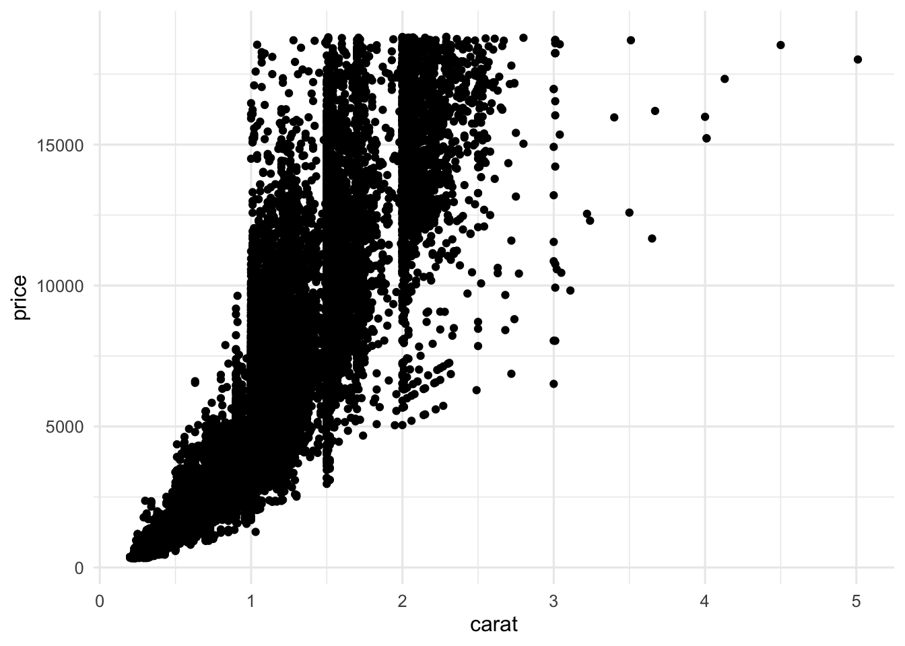
Here is an example of a side-by-side box plot:
diamonds %>%
ggplot(aes(x=clarity,y=price)) +
geom_boxplot()Here is an examplep of a stacked bar plot:
diamonds %>%
ggplot(aes(x=cut,fill=color)) +
geom_bar()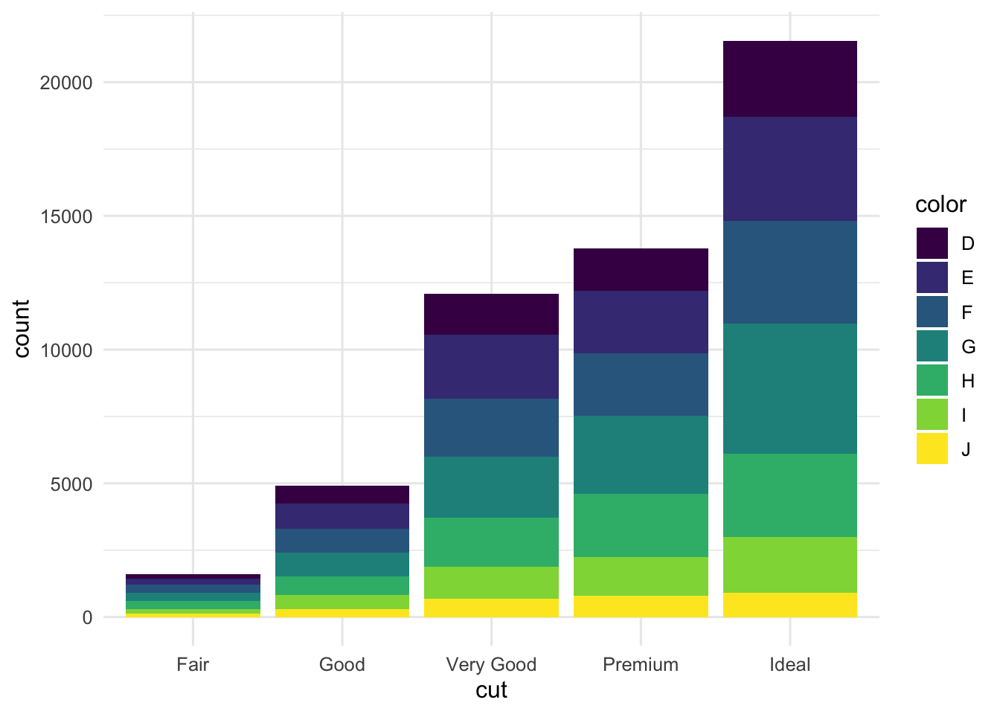
Question: How would you interpret the information provided by each of the last three plots?
Exercise: Use appropriate variables from the mpg data set to make a scatter plot, a side-by-side box plot, and a stacked bar plot.
In some cases it is helpful to apply some kind of transformation to variables because this can help to illuminate the nature of the relationship between variables. For example, here are the scatter plot and side-by-side bar plot of the data from before but now with a \(\log_{10}\) transform applied to the price:
diamonds %>%
ggplot(aes(x=carat,y=log10(price))) +
geom_point()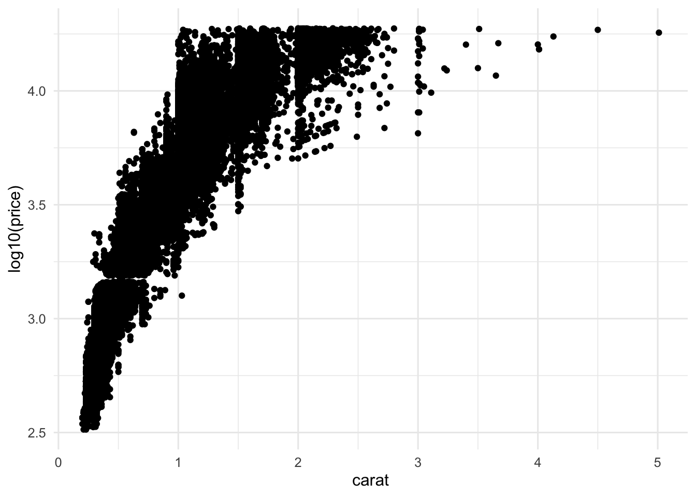
Notice that in the last scatter plot for the diamonds data, there are many points that overlay one another. A way to address this is using the alpha argument like
diamonds %>%
ggplot(aes(x=carat,y=log10(price))) +
geom_point(alpha=0.1)Another way to examine the relationship between two categorical variables is with a relative frequency plot such as
diamonds %>%
ggplot(aes(x=cut,fill=color)) +
geom_bar(position = "fill")Question: What is the interpretation of the relative frequency plot?
Question: Can you think of some ways in which we can improve any of the last few plots?
Exercise: Try to determine if there are any useful transformation you can find for the variables in the plots you made with the mpg data.
The ggpairs function from the GGAlly package can sometimes be a good way to view the relationship between many paris of variables together.
diamonds %>%
select(-c(x,y,z)) %>%
GGally::ggpairs()Note that ggpairs is not very useful for a data set with a lot of variables or a data set that has a categorical variable with a large number of levels.
If we want to move beyond just two variables at a time, we will have to use other aesthetics like color, shape, size, etc. to incorporate the additional variables. Let’s see some examples:
mpg %>%
ggplot(aes(x=displ,y=cty,color=drv)) +
geom_point()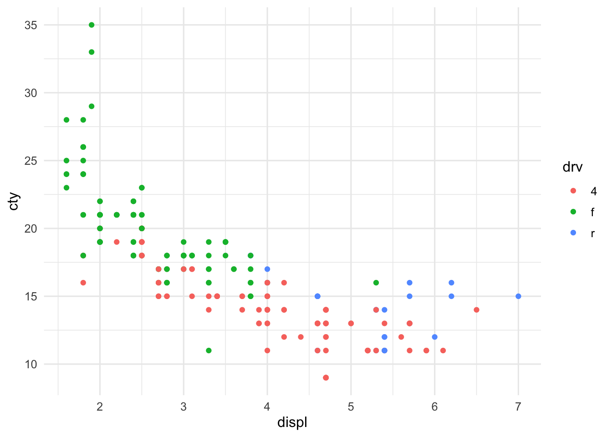
or
mpg %>%
ggplot(aes(x=displ,y=cty,color=as.character(cyl),shape=drv)) +
geom_point()Exercise: Try some techniques to visualize more than two variables at a time for the diamonds data set.
Warning: You should avoid trying to cram too much into a single visualization. Just because you can include many variables does not necessarily mean that doing so will result in a better plot.
Summary So Far
We have seen some basic techniques for data visualization and learned how to use the functionality of ggplot2 for creating high quality visualizations. While we have only scratched the surface in terms of what one can do using ggplot2, you should have a solid grounding for learning more. As we move through the course, we will continue to develop our tools and skills in data visualization. Further, you are highly encouraged to explore more on your own using some of the recommended resources and as part of your semester project.
Our next goal is to look at some case studies in exploratory data analysis where visualizations will play an important role. However, before we get into that you should see how you can use some of the features of Quarto to not only create a high quality plot but also how to include it as a figure in a report or presentation document.
Figures in Quarto
When we create figures in a Quarto notebook, we can add additional information such as a label, figure caption, alt text, etc. The following is an example of how to do this:
#| echo: false
#| warning: false
#| message: false
#| label: fig-quarto-figs
#| fig-cap: Scatter plot of city gas mileage versus the engine size of some sample vehicles. Data is from the `mpg` data set in the `ggplot2` package [@wickham2016].
#| fig-alt: |
#| A scatterplot of city gas mileage vs. engine size of vehicles, with a
#| best fit line of the relationship between these two variables
#| overlaid. The plot displays a negative, non-linear, and relatively
#| strong relationship between these two variables.
mpg %>%
ggplot(aes(x=displ,y=cty)) +
geom_point(aes(color=as.character(cyl),shape=drv),size=2) +
labs(
title = "Engine size",
subtitle = "Engine size versus gas mileage for different vehicles",
x = "Engine displacement (litres)",
y = "City gas mileage (mpg)",
color = "Number of Cylinders",
shape = "Drive type"
) +
scale_color_colorblind()Figure 5 is what the last code chunk produces.
mpg data set in the ggplot2 package (Wickham 2016).EDA Case Studies
In this section, we will work through a couple of short EDA case studies. If you want to see and EDA live coded by a master data scientist, check out the following video:
- Exploratory data analysis worked example video by Hadley Wickham, watch the video on YouTube.
EDA Case Study 1:
Let’s work through an EDA together using the data set on tornados that we loaded earlier in this lesson. To get additional practice in using all the tools we have developed so far, let’s create a new RStudio project and Quarto notebook and go through the EDA together.
EDA Case Study 2:
In one of her blog posts, the data scientist Julia Silge examines the droughts in the United States, view the blog post. As a seasoned data scientist, Silge begins all of her analyses with an EDA. Let’s reproduce and possibly extend the EDA that Silge conducts as part of her analysis. Again, let’s create a new RStudio project and Quarto notebook and go through the EDA together.
Preparation for the next lesson
To prepare for the next lesson, please read:
- Chapter 26 from R for Data Science (Wickham, Çetinkaya-Rundel, and Grolemund 2023). View book online.
References
Deeb, Sameer. 2005. “The Molecular Basis of Variation in Human Color Vision.” Clinical Genetics 67: 369–77.
Healy, Kieran. 2018. Data Visualization: A Practical Introduction. Princeton University Press.
Neuwirth, Erich. 2014. RColorBrewer: ColorBrewer Palettes. https://cran.r-project.org/web/packages/RColorBrewer/index.html.
Timbers, Tiffany, Trevor Campbell, and Melissa Lee. 2022. Data Science: A First Introduction. CRC Press.
Wickham, Hadley. 2016. Ggplot2: Elegant Graphics for Data Analysis. Springer-Verlag New York. https://ggplot2.tidyverse.org.
Wickham, Hadley, Mine Çetinkaya-Rundel, and Garrett Grolemund. 2023. R for Data Science. " O’Reilly Media, Inc.".
Wilke, Claus O. 2019. Fundamentals of Data Visualization: A Primer on Making Informative and Compelling Figures. O’Reilly Media.
Expand for Session Info
─ Session info ───────────────────────────────────────────────────────────────
setting value
version R version 4.3.1 (2023-06-16)
os macOS Ventura 13.5.2
system aarch64, darwin20
ui X11
language (EN)
collate en_US.UTF-8
ctype en_US.UTF-8
tz America/New_York
date 2023-09-20
pandoc 3.1.1 @ /Applications/RStudio.app/Contents/Resources/app/quarto/bin/tools/ (via rmarkdown)
quarto 1.3.450 @ /usr/local/bin/quarto
─ Packages ───────────────────────────────────────────────────────────────────
package * version date (UTC) lib source
canlang * 0.0.1 2023-09-13 [1] Github (ttimbers/canlang@1a54305)
cowplot * 1.1.1 2020-12-30 [1] CRAN (R 4.3.0)
dplyr * 1.1.3 2023-09-03 [1] CRAN (R 4.3.0)
forcats * 1.0.0 2023-01-29 [1] CRAN (R 4.3.0)
gapminder * 1.0.0 2023-03-10 [1] CRAN (R 4.3.0)
ggplot2 * 3.4.3 2023-08-14 [1] CRAN (R 4.3.0)
ggthemes * 4.2.4 2021-01-20 [1] CRAN (R 4.3.0)
kableExtra * 1.3.4 2021-02-20 [1] CRAN (R 4.3.0)
lubridate * 1.9.2 2023-02-10 [1] CRAN (R 4.3.0)
magick * 2.7.5 2023-08-07 [1] CRAN (R 4.3.0)
patchwork * 1.1.3 2023-08-14 [1] CRAN (R 4.3.0)
purrr * 1.0.2 2023-08-10 [1] CRAN (R 4.3.0)
RColorBrewer * 1.1-3 2022-04-03 [1] CRAN (R 4.3.0)
readr * 2.1.4 2023-02-10 [1] CRAN (R 4.3.0)
readxl * 1.4.3 2023-07-06 [1] CRAN (R 4.3.0)
sessioninfo * 1.2.2 2021-12-06 [1] CRAN (R 4.3.0)
stringr * 1.5.0 2022-12-02 [1] CRAN (R 4.3.0)
tibble * 3.2.1 2023-03-20 [1] CRAN (R 4.3.0)
tidyr * 1.3.0 2023-01-24 [1] CRAN (R 4.3.0)
tidyverse * 2.0.0 2023-02-22 [1] CRAN (R 4.3.0)
[1] /Library/Frameworks/R.framework/Versions/4.3-arm64/Resources/library
──────────────────────────────────────────────────────────────────────────────
Footnotes
You can also use the pipe operator
%>%(or even|>) to input a data frame into the first argument for theggplotfunction.↩︎If you copy and paste the plot commands in this notebook into your own R session you may get plots with a slightly difference appearance. The reason for this is that a plot theme has been set for this notebook using the
theme_set(theme_minimal(base_size=12))command. You can learn more aboutggplotthemes here.↩︎
Reuse
CC BY-NC-SA 4.0